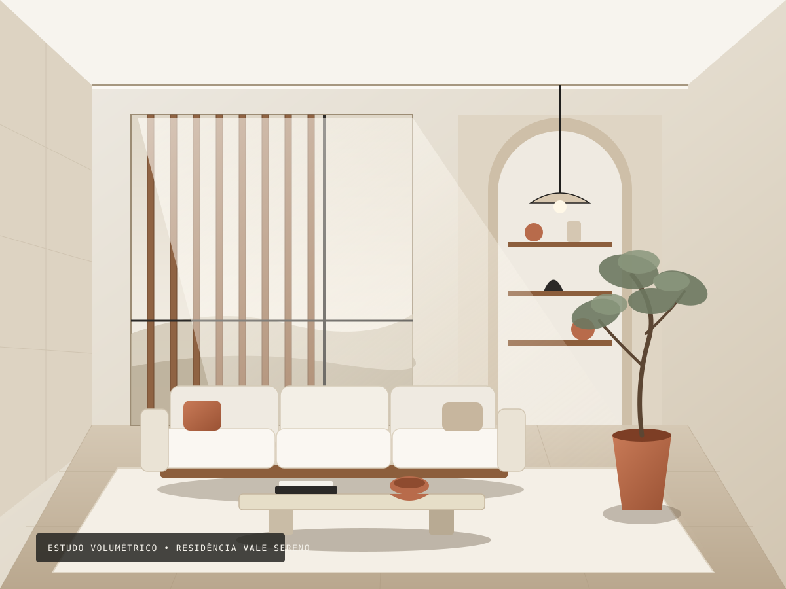
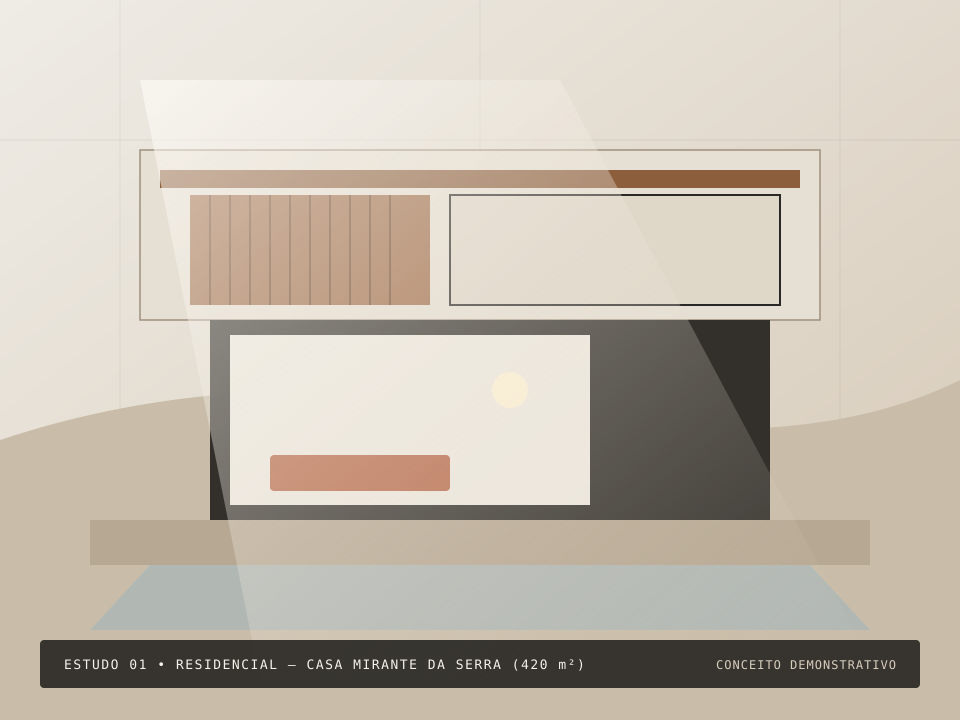
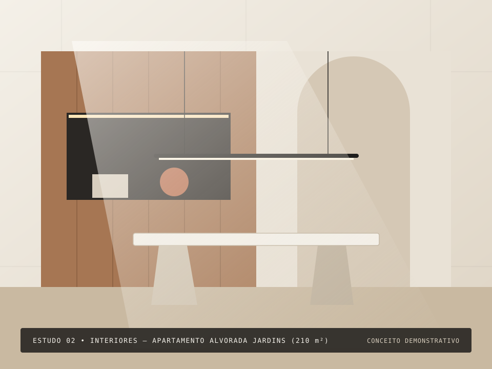
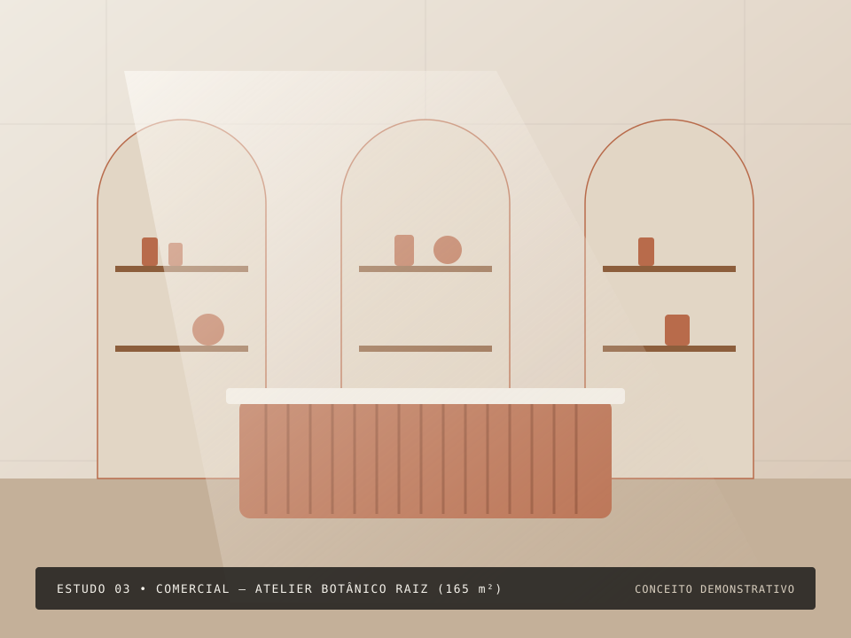
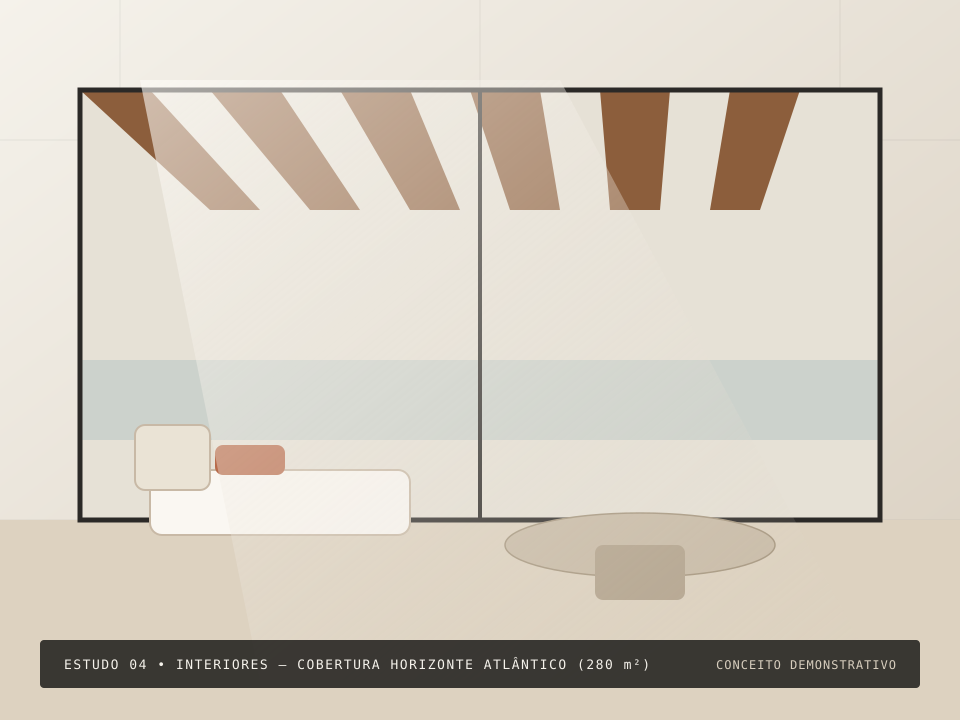
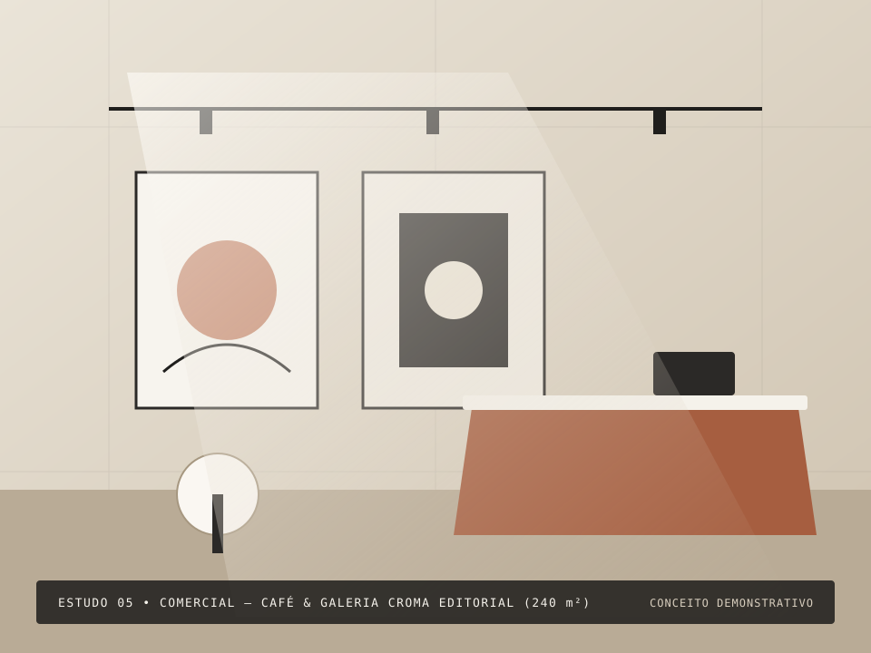
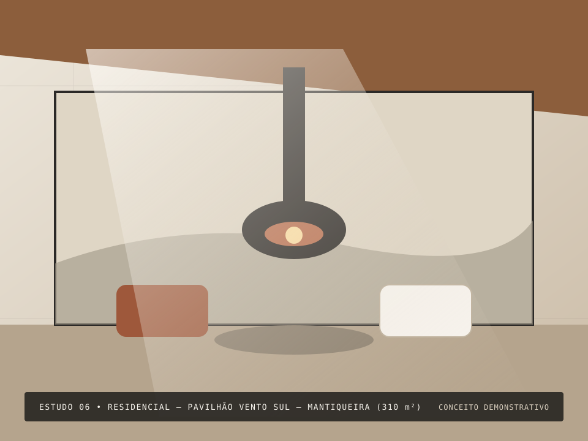
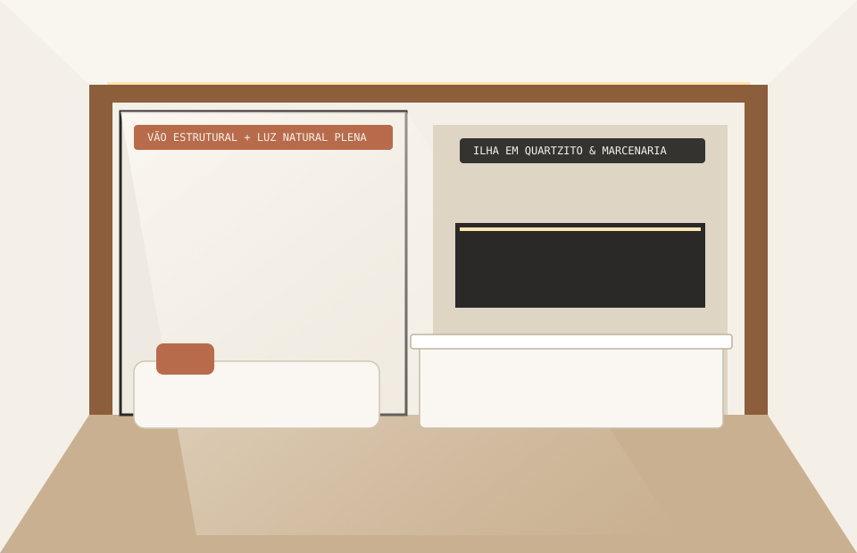
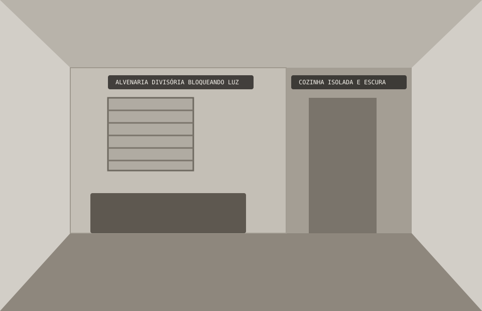
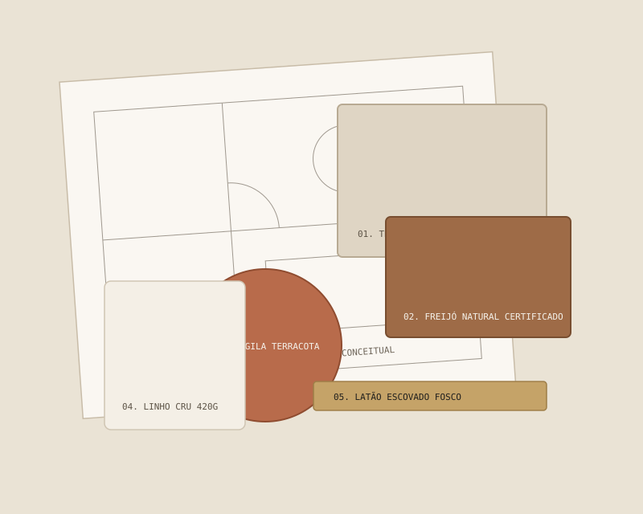

Luz Natural como Matéria-Prima
Estudamos a orientação solar antes de definir qualquer divisória. Brises, beirais, cortinas em linho translúcido e iluminação indireta quente (2700K) criam transições suaves ao longo do dia.
Projetamos residências, interiores e espaços comerciais onde a estética atemporal caminha junto à previsibilidade técnica. Do diagnóstico espacial ao caderno executivo detalhado, cada decisão respeita a sua rotina e o seu investimento.

PROJETO DESTAQUE • ESTUDO CONCEITUAL DEMONSTRATIVO“Acreditamos em uma arquitetura que não grita para ser notada. Quando a circulação é intuitiva, a ventilação cruzada funciona e a luz da tarde toca as superfícies certas, o espaço acolhe em silêncio.”
Muitos proprietários e empresários adiam o sonho de transformar seus espaços por receio de obras desorganizadas, projetos indecifráveis ou escolhas estéticas datadas. Na Linha Viva, tratamos o desenho arquitetônico como um instrumento de serenidade: unimos sensibilidade plástica a memoriais descritivos claros, compatibilização prévia e especificações técnicas precisas.
Estudamos a orientação solar antes de definir qualquer divisória. Brises, beirais, cortinas em linho translúcido e iluminação indireta quente (2700K) criam transições suaves ao longo do dia.
Eliminamos corredores ociosos e barreiras visuais desnecessárias. Cada bancada, passagem e marcenaria é dimensionada para o uso real de quem habita ou trabalha no ambiente.
Um belo estudo 3D só se sustenta com um projeto executivo minucioso. Entregamos pranchas cotadas, paginações e quantitativos que permitem orçar a obra com segurança.
Projetos autorais desenvolvidos especificamente para demonstrar nossa linguagem estética, soluções de planta e paleta de materiais. Nota: Estudos conceituais demonstrativos, não atribuídos a obras de terceiros.

Conceito Demonstrativo • ResidencialImplantação em aclive com dois volumes puros em concreto pigmentado areia, brises móveis de freijó para controle solar oeste e estar social integrado à varanda gourmet.

Conceito Demonstrativo • InterioresReconfiguração de planta dos anos 1980: abertura da antiga copa para o living através de painel mimetizado em marcenaria, ilha monolítica em quartzito Taj Mahal e iluminação cênica.

Conceito Demonstrativo • ComercialVarejo físico de cosmética natural pensado como percurso sensorial: balcão central canelado em blocos de terracota artesanal, nichos arqueados acústicos e área de experimentação.

Conceito Demonstrativo • InterioresContinuidade visual entre área interna e terraço descoberto através de piso único em travertino levigado, esquadrias minimalistas embutidas e especificação de tecidos náuticos naturais.

Conceito Demonstrativo • ComercialEspaço comercial híbrido unindo livraria de arte, cafeteria de especialidade e sala de exposições. Projeto focado em conforto acústico, fluxo de fila invisível e iluminação em trilhos IRC > 95.

Conceito Demonstrativo • ResidencialArquitetura residencial de montanha com sistema construtivo racionalizado em madeira laminada colada (MLC) e aço, vidros duplos insulados para eficiência térmica e lareira escultórica central.
Arraste o controle ou utilize os botões abaixo para comparar o diagnóstico de uma planta compartimentada com a proposta conceitual de reforma e integração. Imagens ilustrativas locais de estudo arquitetônico.


Alvenaria não estrutural bloqueando a insolação da fachada principal, corredor estreito de serviço, forro com rebaixo excessivo e iluminação fria centralizada.
Substituição da parede divisória por pórtico seco em madeira e aço, nivelamento de piso em tauari fosco, ilha monolítica em quartzito escovado e sanca linear 2700K.
Cada demanda exige um nível próprio de aprofundamento técnico. Selecione a modalidade adequada ao seu momento e inicie seu briefing com o escopo pré-configurado.
Para apartamentos novos entregues pela construtora ou residências que buscam identidade autoral, ergonomia apurada, iluminação cênica e detalhamento completo de marcenaria e mobiliário.
Para imóveis existentes que necessitam de atualização de infraestrutura, abertura de vãos, integração entre cozinha e estar, renovação de banheiros e conforto termoacústico.
Para clínicas, escritórios boutique, flagships, cafés e estúdios que desejam traduzir o posicionamento da sua marca em espaços acolhedores, funcionais e memoráveis para seus clientes.
Para quem não pretende realizar obra civil ou demolições, mas precisa de olhar arquitetônico profissional para reorganizar o layout, acertar nas proporções do mobiliário e aquecer a atmosfera.
Não trabalhamos com promessas de prazos irreais ou decisões tomadas no canteiro de obras. Nosso processo é estruturado em marcos de aprovação documentados.
Realizamos o levantamento métrico e fotográfico detalhado do imóvel, analisamos insolação, ventilação, restrições condominiais ou estruturais e conduzimos uma entrevista estruturada sobre hábitos, expectativas de investimento e prioridades.
Entregável da etapa: Programa de necessidades validado + Diagnóstico técnico de pré-existências.
Desenvolvemos a planta baixa humanizada solucionando fluxos de circulação e ergonomia, acompanhada das perspectivas volumétricas e moodboard tátil de materiais para tangibilizar a atmosfera do projeto.
Entregável da etapa: Planta de layout aprovada + Perspectivas 3D conceituais + Paleta de materiais.
Consolidamos as escolhas definitivas de pedras, madeiras, metais, louças, equipamentos e iluminação, alinhando o desenho arquitetônico com projetos complementares (ar-condicionado, elétrica, automação e estrutura).
Entregável da etapa: Pranchas de compatibilização + Especificação consolidada de acabamentos.
Traduzimos o projeto aprovado em desenhos técnicos rigorosos para execução fiel: paginação milimétrica de pisos e paredes, plantas de forro e iluminação, cortes de marcenaria sob medida e detalhamento de bancadas.
Entregável da etapa: Caderno Executivo Completo (PDF + DWG) + Memorial descritivo e quantitativo.
Apoiamos a equalização técnica de orçamentos junto a fornecedores e realizamos visitas técnicas programadas em marcos críticos da obra (locação de alvenaria, conferência de pontos, instalação de pedras e marcenaria).
Entregável da etapa: Relatórios técnicos de visita em obra e validação de amostras in loco.

Concebido como um ateliê de projeto dedicado ao diálogo entre a herança moderna brasileira e o minimalismo contemporâneo acolhedor.
Valorizamos materiais que envelhecem com dignidade — a pedra natural com seus poros preservados, a madeira brasileira de manejo certificado, o reboco mineral e o linho puro. Cada projeto nasce do respeito às particularidades de quem vai viver ou empreender no espaço, evitando fórmulas padronizadas.
Esta página apresenta uma identidade institucional fictícia (Linha Viva Arquitetura e Interiores) criada exclusivamente como modelo comercial. Nenhum número de registro profissional (CAU/CREA) ou autoria de terceiros é declarado nesta versão demonstrativa. Ao adotar esta estrutura para uso oficial, o escritório titular deve inserir sua razão social e o respectivo registro ativo no Conselho de Arquitetura e Urbanismo (CAU) ou Conselho Regional.
Responsável pela leitura do lugar, partido arquitetônico, fluidez de planta e harmonia da luz natural.
Responsável pela precisão das pranchas 1:20, compatibilização técnica de sistemas e especificação tátil de acabamentos.
Na arquitetura séria, honorários dependem da complexidade técnica, das disciplinas envolvidas e do grau de intervenção civil. Utilize o simulador abaixo para visualizar os entregáveis recomendados e a faixa estimada de desenvolvimento do projeto (sem promessas de valores fechados padronizados).
Aviso de Transparência: Os relatos abaixo são exemplos ilustrativos de demonstração para representar situações típicas de atendimento residencial, comercial e de consultoria. Não correspondem a clientes reais.
“Nosso maior receio ao iniciar a reforma do apartamento era enfrentar aditivos surpresa na obra por falta de definição. O caderno executivo entregue detalhou cada tomada, recorte de pedra e prateleira da marcenaria antes de contratarmos a empreiteira.”
“Precisávamos que nossa clínica transmitisse acolhimento sem parecer um ambiente hospitalar frio. O estudo de iluminação indireta, acústica e materiais naturais mudou completamente a percepção dos nossos pacientes logo na recepção.”
“Como o imóvel era alugado, optamos pela Consultoria de Ambientes. Sem quebrar uma única parede, o redesenho de layout, tapetes sob medida e marcenaria modular solta trouxeram a sofisticação que buscávamos em poucas semanas.”
Reunimos respostas diretas sobre como funcionam as contratações, entregas técnicas, atendimento à distância e orçamento de obra.
Falar sobre meu imóvelO Projeto de Interiores Completo envolve intervenção técnica profunda: plantas de demolição/construção, pontos elétricos e hidráulicos, forro de gesso, luminotécnica, paginação de pedras e detalhamento executivo de marcenaria sob medida. Já a Consultoria de Ambientes é indicada para espaços prontos onde não haverá obra civil, focando em layout, paleta de cores, iluminação decorativa, tapetes, cortinas e curadoria de mobiliário solto.
Improvisos em obra são a principal causa de estouro de orçamento. Durante o briefing, alinhamos sua expectativa de investimento e especificamos materiais compatíveis. Na fase executiva, entregamos plantas milimetricamente cotadas e memoriais descritivos para que você possa solicitar orçamentos comparáveis (na mesma base técnica) a diferentes fornecedores e empreiteiras.
Sim. Desenvolvemos projetos para diversas regiões do Brasil. O levantamento métrico inicial pode ser realizado presencialmente (mediante agendamento) ou por equipe técnica parceira local seguindo nosso checklist padrão. As reuniões de apresentação 3D e revisão ocorrem por videoconferência em alta definição, e enviamos caixas físicas com amostras de materiais (pedras, lâminas de madeira e tecidos) na etapa de anteprojeto.
O cenário ideal é iniciar o projeto de 4 a 6 meses antes da entrega das chaves (ou durante o período de personalização da construtora). Assim, você recebe as chaves com o Projeto Executivo 100% concluído e fornecedores já cotados, iniciando a execução imediatamente sem pagar meses extras de condomínio com o imóvel parado.
Nossa atuação é focada exclusivamente em Arquitetura, Interiores, Detalhamento Executivo e Acompanhamento Técnico de conformidade. Essa independência garante isenção total na defesa dos interesses técnicos do cliente. Auxiliamos na análise comparativa de propostas de empreiteiras, marcenarias e marmorarias de confiança do mercado.
Por privacidade e transparência técnica, esta página estática não armazena seus dados em servidores ou bancos de dados ocultos. Ao preencher o briefing, seu próprio navegador estrutura o resumo técnico e abre diretamente o seu aplicativo de WhatsApp ou cliente de E-mail padrão para que você revise e envie a mensagem com total controle.
Preencha os dados essenciais do seu imóvel ou negócio ao lado. O sistema organiza automaticamente o seu briefing para envio imediato via WhatsApp ou E-mail, ou cópia para a área de transferência.
Retorno comercial em dias úteis com análise preliminar do escopo.
Você também pode anexar a planta baixa do imóvel após abrir seu aplicativo de e-mail.
Segunda a sexta, das 9h às 18h (Mediante agendamento prévio)
Nenhum dado digitado é salvo ou rastreado em banco de dados externo. O envio ocorre exclusivamente quando você aciona o botão de WhatsApp ou E-mail (`mailto:`), abrindo seu aplicativo oficial com a mensagem pronta.
Os dados permanecem apenas nesta sessão ativa e não são gravados no navegador.